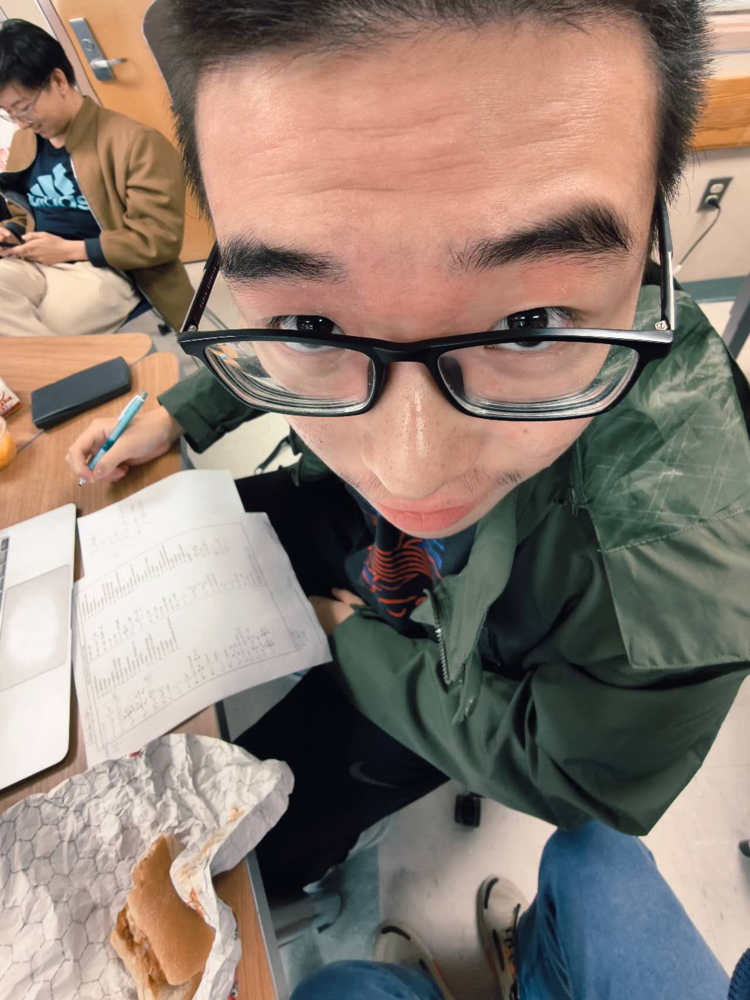

05 / ABOUT ME
A closer look
at the person.
Hancheng “Henry” Wang · Canyon Crest Academy · Class of 2027

HI, I’M HENRY.
I like working
with my hands.
I moved from China to the United States in eighth grade. I’m now a senior at Canyon Crest Academy in San Diego.
I’m interested in biology, the environment, and physics, especially when I can work with something physical. I like electronics, building devices, and figuring out why something isn’t working.
SkinGuard is the project I’ve spent the most time on. I started it and lead the hardware and system work, including the sensors, device integration, app, and testing workflow.
This year, I’m also an engineering teaching assistant at CCA, supporting a class of 38 students. Outside class, I play badminton and lead our Super Joey club.
BEYOND THE PROJECT DESCRIPTION
A few everyday moments.
A few more photos3 photos＋




KEEP EXPLORING
Start with what I’ve made.
SkinGuard brings together my interests in hardware, biology, and everyday needs.